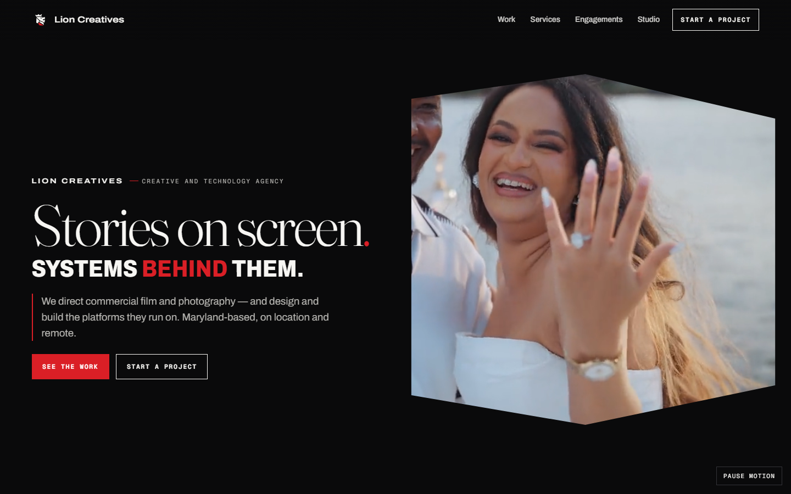
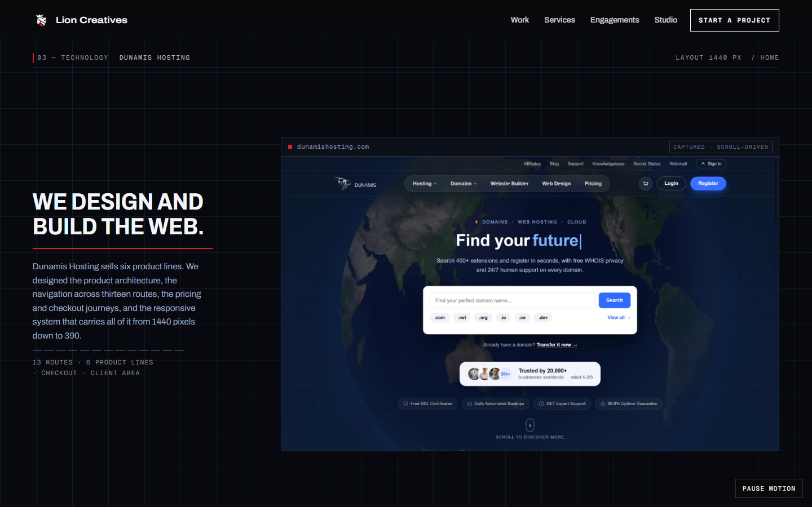
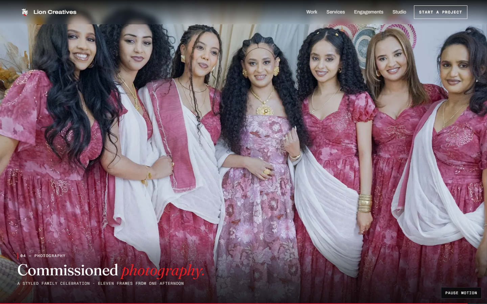
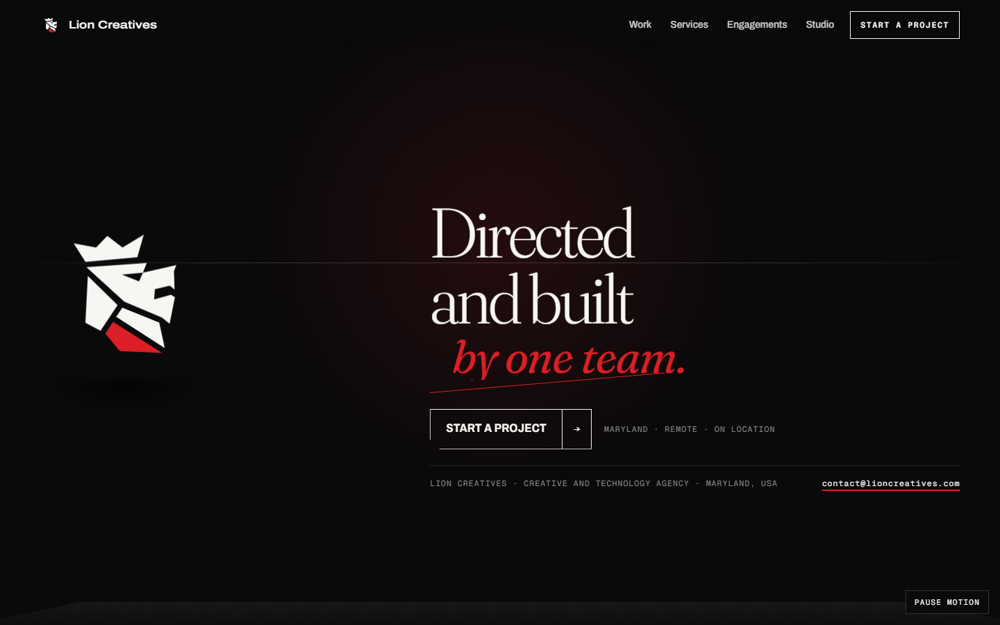

Lion Creatives · V10 · founder decision document
The founder's criticism was specific: multiple headlines shared the same scale, weight, spacing and voice, so the page read flat. This system fixes that structurally. Three families — chosen because each carries an axis the others don't — cover eight distinct roles. Every face is free and properly licensed (Google Fonts, OFL); nothing here requires a purchase. Founder typography approval: PENDING.
| Voice | Family | Axis that earns its place | Licence |
|---|---|---|---|
| Studio — the cinema | Fraunces | opsz 9–144 — a real optical-size axis, so a 6.6rem display line and a 2.3rem section head are different textures, not one face at two sizes. This is the specific thing Instrument Serif structurally cannot do. | OFL |
| Work — the doing | Archivo | wdth 62–125 — width carries meaning: navigation condenses (92%), body sits normal (100%), project names expand (118%), the technology register compresses and goes uppercase (88%). | OFL |
| Machine — the instruments | Geist Mono | wght 100–900 plus tabular figures and a slashed zero, so metadata, technical readouts and CTAs separate by weight instead of all being one mono. | OFL |
Verified in the browser before the build, not assumed: each axis was rendered at both extremes and measured to confirm it is live rather than silently falling back to a static instance — the failure mode that would collapse the whole system back to “flat”.
We direct commercial film and photography.
Both halves are the same face at nearly the same size. The italic and the red do the only differentiating, so the pair reads as one thought in two lines — not as two disciplines. Instrument Serif ships a single weight, so there was no way out of it.
We direct commercial film and photography — and design and build the platforms they run on.
A light serif at full optical size against a black condensed uppercase sans. The creative half and the technology half are now different kinds of type, not different sizes of the same type — which is the contrast the founder asked for.




Fraunces has a WONK axis that substitutes flared, eccentric letterforms. It is charming at 120px and reads as “artisanal” — off-brand here — so it is set to 0 everywhere, deliberately. Archivo's italic is not loaded (about 60KB saved); italics are Fraunces only. Geist Mono is used at three weights, not as decoration. Sub-routes still carry the earlier faces: they are re-set once a system is approved, because restyling ten pages in an unapproved system would be wasted work.
Founder typography approval: PENDING · the prototype · copy deck · A–G regression